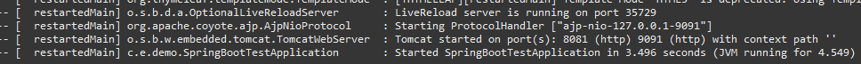
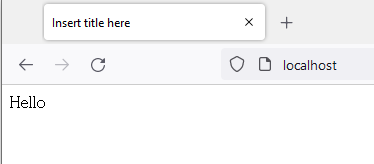
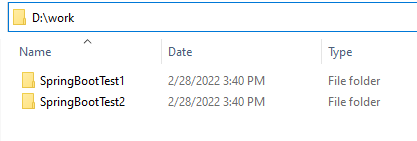
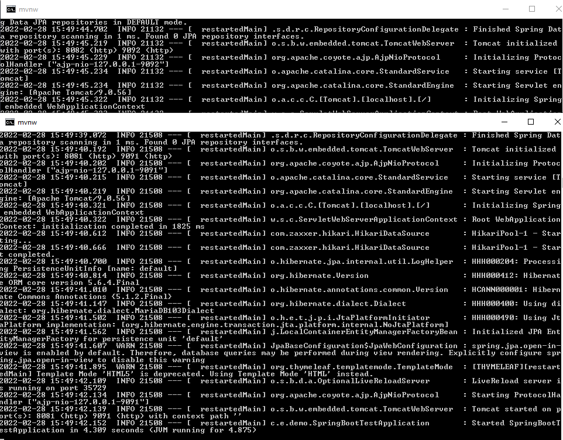
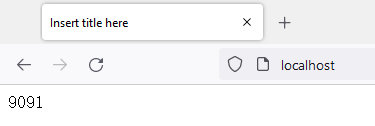
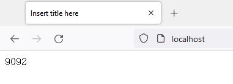
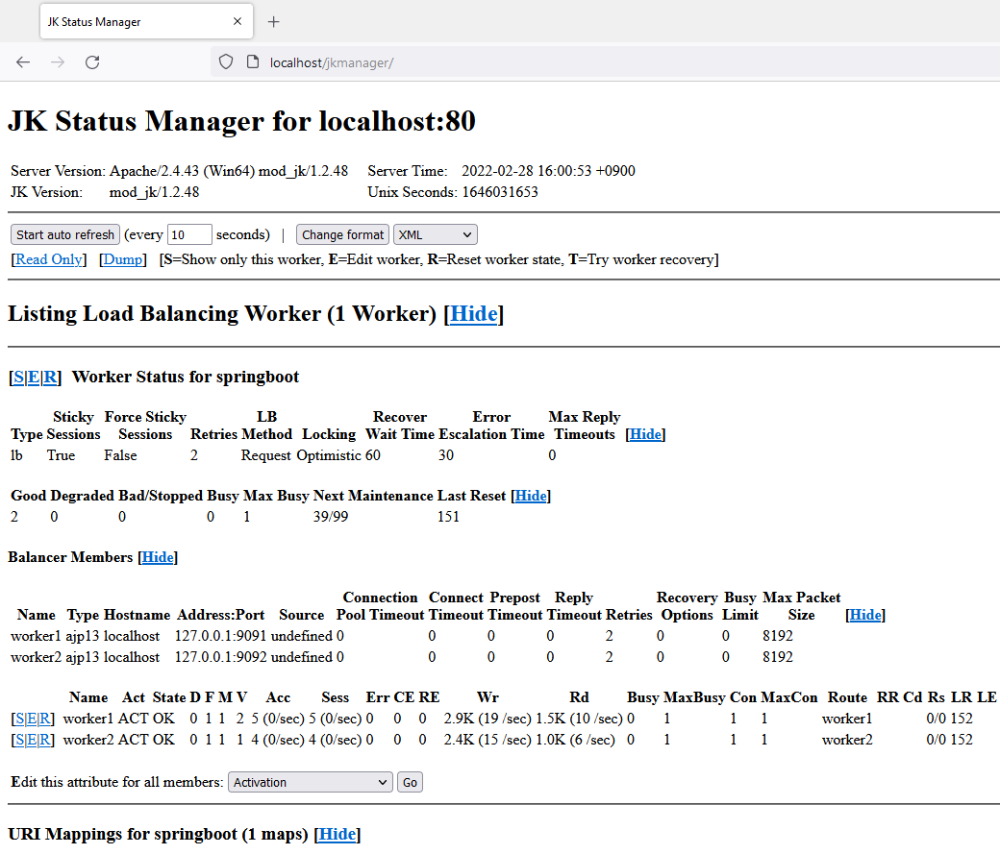

[Java] 60. Spring bootでApacheの連結とロードバランシングを設定する方法
こんにちは。明月です。
この投稿はSpring bootでApacheの連結とロードバランシングを設定する方法に関する説明です。
Spring bootにはTomcatが内蔵しているので、すぐビルドして配布してもウェブサーバーで運用可能です。つまり、複雑なTomcat設定が必要ないです。
このウェブというのはブラウザから要請と応答処理で接続からパーシングまで様々な処理があります。でもトラフィック(接続者)が多くなるとTomcatサーバーだけでは足りないので、ApacheとTomcatで分割して役割を割り振りします。
役割というのはブラウザの要請と応答処理、様々なプロトコール処理をApacheに任せて、TomcatはHtmlパーシングとセッション管理の役割をします。
それでApacheサーバーとTomcatサーバーを連結する方法がありますが、以前の投稿でApacheとTomcatを連結する方法に関して説明したことがあります。
リンク - [CentOS] ApacheとTomcatの連携
でも、Spring bootにはTomcatがフレームワークの中で含めている形になっています。それでTomcatの設定(以前のserver.xml)をプロジェクトの中で設定しなければならないです。
まず、以前のプロジェクトから@Configurationアノテーションを宣言したAJPConfigクラスファイルを生成しましょう。
package com.example.demo.Controller;
import org.apache.catalina.connector.Connector;
import org.apache.coyote.ajp.AbstractAjpProtocol;
import org.springframework.beans.factory.annotation.Value;
import org.springframework.boot.web.embedded.tomcat.TomcatServletWebServerFactory;
import org.springframework.boot.web.servlet.server.ServletWebServerFactory;
import org.springframework.context.annotation.Bean;
import org.springframework.context.annotation.Configuration;
// 設定クラス
@Configuration
public class AJPConfig {
// application.propertiesから設定値を受け取る。
@Value("${tomcat.ajp.port}")
private int port;
// bean設定
@Bean
public ServletWebServerFactory servletContainer() {
// AJP/1.3プロトコールのConnectorを生成
var ajpConnector = new Connector("AJP/1.3");
// ポート設定をapplication.propertiesで設定
ajpConnector.setPort(port);
// ajpログ、以前のserver.xmlのallowTraceアトリビュート設定
ajpConnector.setAllowTrace(false);
// httpとhttps処理、現在は要らないのでコメント
// ajpConnector.setScheme("http");
// SSL連結する時に使う
// ajpConnector.setSecure(false);
// server.xmlからsecretRequired設定
((AbstractAjpProtocol<?>)ajpConnector.getProtocolHandler()).setSecretRequired(false);
// tomcat設定
var tomcat = new TomcatServletWebServerFactory();
// 追加
tomcat.addAdditionalTomcatConnectors(ajpConnector);
return tomcat;
}
}
AJPConfigクラスを上みたいに作成してapplication.propertiesにtomcat.ajp.portを追加しましょう。
# サーバーポート設定
server.port=8081
# ajpポート設定
tomcat.ajp.port=9091
Apache設定の場合あｈmod_jk.soファイルをインストールしてhttpd.configファイルを修正するし、workers.propertieファイルを追加します。(windowの場合あｈApache Loungeからダウンロードします。 リンク - https://www.apachelounge.com/download/)
# モードロード
LoadModule jk_module modules/mod_jk.so
# モード設定
<IfModule mod_jk.c>
JkWorkersFile conf/workers.properties
JkShmFile run/mod_jk.shm
JkLogFile logs/mod_jk.log
JkLogLevel info
JkLogStampFormat "[%y %m %d %H:%M:%S] "
</IfModule>
# 80 ポートの場合
<VirtualHost *:80>
JkMount /* springboot
JkMount /jkmanager/* jkstatus
ServerName localhost
</VirtualHost>
# 仮想ディレクトリのjkmanagerで接続する場合
<Location /jkmanager/>
JkMount statusmanager
# ローカルだけ接続
Require ip 127.0.0.1
</Location>
# リストキー
worker.list=springboot,jkstatus
# ロードバランシング状態
worker.jkstatus.type=status
# ajpポート
worker.springboot.port=9091
# ホスト名
worker.springboot.host=localhost
# タイプ
worker.springboot.type=ajp13
# 不可分散比率
worker.springboot.lbfactor=1
これからApacheを起動してイクリプスからSpring bootを起動しましょう。

ajpプロトコールが起動されることを確認できます。
Apacheで80を接続するとTomcatと連結したことを確認できます。

でも、トラフィック(接続者)がもっと増えてApacheとTomcatだけで足りない時期が来ました。そうすると普通のウェブ要請と応答処理で一番時間が掛かる部分がTomcatのHtmlパーシング部分です。
仕様によりその結果がいつも違うので要請によるHtmlを作成するからです。そうするとApacheとTomcat環境でTomcatを複数に増やして一つのApacheに連結しますが、それをロードバランシングと言います。
これからこのプロジェクトを二つのTomcatサーバーに分けてApacheからロードバランシングしましょう。
まず、二つのサーバーが作動することを確認するため、index画面を修正します。
package com.example.demo.Controller;
import org.springframework.beans.factory.annotation.Value;
import org.springframework.stereotype.Controller;
import org.springframework.ui.Model;
import org.springframework.web.bind.annotation.RequestMapping;
// コントローラーアトリビュート
@Controller
// Controllerクラス
public class HomeController {
// application.propertiesから設定値を受け取る。
@Value("${tomcat.ajp.port}")
private int port;
// マッピングアドレス
@RequestMapping(value = { "/", "/index.html" })
public String index(Model model) {
// ポートデータをテンプレートに渡す
model.addAttribute("data", port);
// テンプレートファイル名
return "Home/index";
}
}
画面にapplication.propertiesで設定するajpポート番号を画面に表示することで修正しましょう。
そして、イクリプスでは二つのサーバーを起動することができないので、テストが可能なディレクトリにソースをコピーしましょう。

私はdドライブのworkフォルダにコピーしました。
そして各フォルダのapplication.propertiesにhttpを8081と8082で設定するし、ajpを9091と9092で設定して重ならないように設定しましょう。
設定をしてウィンドウの場合はプロジェクトでmvnw.cmdファイルがありますが、それを利用してビルドして実行しましょう。
mvnw clean install spring-boot:run

テストが実行してログメッセージが表示しますが、エラーが発生しないと正常に実行されたことです。
一応、Tomcatを実行されてますが、ロードバランシングのため、Apache設定を修正して実行しましょう。
# work リスト
worker.list=springboot,jkstatus
# apacheに連結されているmod_jkに関する状況(ロードバランシング表示)
worker.jkstatus.type=status
# type lbはロードバランシングの意味
worker.springboot.type=lb
# 同一なsessionIDの場合、一つのtomcatだけに継続的に管理する必要がある場合。
worker.springboot.sticky_session=true
# ロードバランシングのリスト
worker.springboot.balance_workers=worker1,worker2
# 1番目のロードバランシングのTomcat
worker.worker1.type=ajp13
# ホスト名
worker.worker1.host=localhost
# ajpポート
worker.worker1.port=9091
# 処理割り当て比率、つまり、2番目に1という設定したので、1:1比率でロードバランシングになる。
worker.worker1.lbfactor=1
# 2番目のロードバランシングのTomcat
worker.worker2.type=ajp13
# ホスト名
worker.worker2.host=localhost
# ajpポート
worker.worker2.port=9092
# 不可分散比率
worker.worker2.lbfactor=1
上みたいにworks.propertiesにロードバランシング設定をします。
これからapacheを実行してブラウザから接続しましょう。
そうするとlocalhostに接続するたびに結果が9091になる時もあるし、9092になる場合もあります。


そうすると接続の数によりAphacheから二つのTomcatサーバーに分散処理することを確認できます。
上の設定のhttpd.confからjkmanagerを設定しました。
そうするとlocalhost/jkmanager/に接続しましょう。

ApacheからTomcatサーバーのロードバランシングする状態が表示されますね
説明が複雑だったんですが、実際に設定すると以前より簡単になったことを感じられますね。Tomcatアプリもフレームワークの中にあるからビルド工程や配布前略の設定が以前よりもっと簡単になるではないかと予想しますね。
次の投稿ではロードバランシングさらたサーバーでセッション共有するセッションクラスタリングに関して説明します。
ここまでSpring bootでApacheの連結とロードバランシングを設定する方法に関する説明でした。
ご不明なところや間違いところがあればコメントしてください。
- [Java] 61. Spring bootでRedisデータベースを利用してセッションクラスタリング設定する方法2022/03/01 18:20:52
- [Java] 60. Spring bootでApacheの連結とロードバランシングを設定する方法2022/02/28 18:45:48
- [Java] 59. Spring bootのJPAでEntityManagerを使い方2022/02/25 18:27:48
- [Java] 58. EclipseでSpring bootのJPAを設定する方法2022/02/23 18:11:10
- [Java] 57. EclipseでSpring bootを設定する方法2022/02/22 19:04:49
- [Java] 56. Web serviceのサーブレット(Servlet)で初期化作業(properties設定)2021/07/02 17:10:36
- [Java] 55. Spring frameworkに文字化けを解決する方法(Encoding設定)2021/06/30 16:37:16
- [Java] 54. Spring frameworkでWeb filterを使う方法2021/06/29 18:25:12
- [Java] 53. ウェブサービス(Web service)でエラーページを処理する方法2021/06/25 13:35:54
- [Java] 61. Spring bootでRedisデータベースを利用してセッションクラスタリング設定する方法2022/03/01 18:20:52
- [Java] 60. Spring bootでApacheの連結とロードバランシングを設定する方法2022/02/28 18:45:48
- [Java] 59. Spring bootのJPAでEntityManagerを使い方2022/02/25 18:27:48
- [Java] 58. EclipseでSpring bootのJPAを設定する方法2022/02/23 18:11:10
- [Java] 57. EclipseでSpring bootを設定する方法2022/02/22 19:04:49
- [Python] Redisデータベースに接続して使い方2022/02/21 18:23:49
- [Java] Redisデータベースを接続して使い方(Jedisライブラリ)2022/02/16 18:13:17
- [C#] Redisのデータベースを接続して使い方2022/02/15 18:46:09
- [CentOS] Redisデータベースをインストールする方法とコマンドを使い方2022/02/14 18:33:07
- [Design pattern] 3-6. ステートパターン(State pattern)2021/11/17 20:04:47
- [Design pattern] 3-5. メメントパターン(Memento pattern)2021/11/16 20:01:36
- [Design pattern] 3-4. イテレータパターン(Iterator pattern)2021/11/15 19:31:28
- [CentOS] Linux環境(CentOS)でCassandra(NoSQL DB)をインストールする方法(DBeaverブラウザでNoSQL使い方)2021/11/12 17:33:58
- [Design pattern] 3-3. コマンドパターン(Command pattern)2021/11/05 17:01:42
- [Window] apache-tomcatでロードバランシング(Load balancing)する方法とセッションクラスタリング（セッション共有）2021/11/05 16:58:45